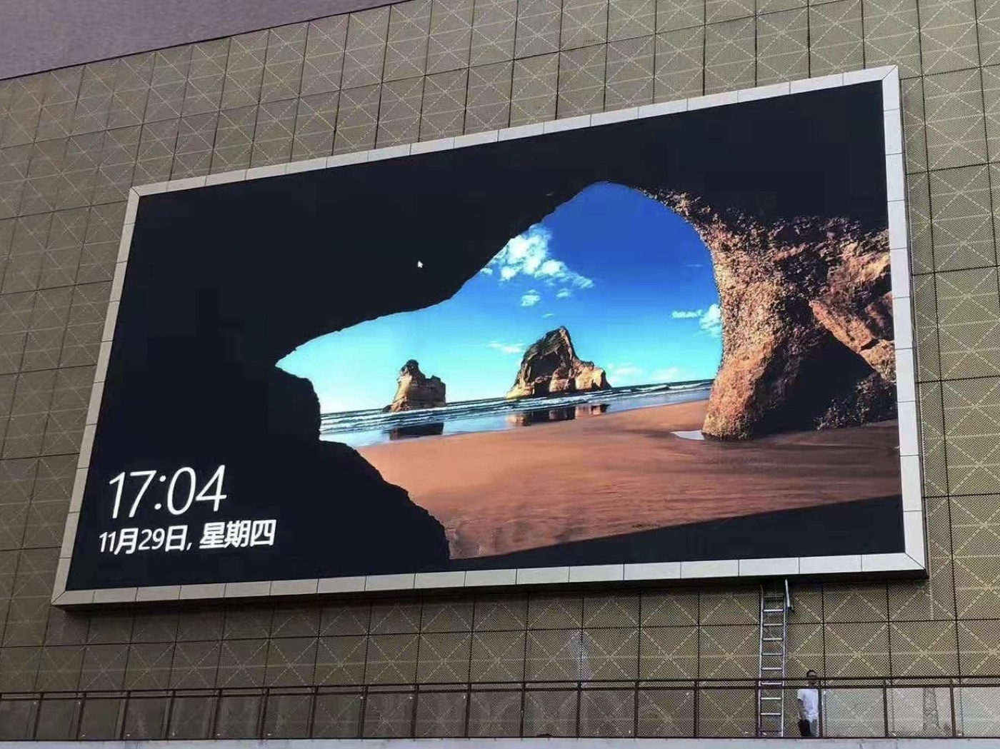

A digital billboard is an advertising asset first and a display product second. It is bought to sell impressions, so the specification has to satisfy a media buyer as well as a structural engineer. Brightness, pitch, uptime, and proof of play all feed directly into the rate the site can command.
Outdoor conditions then impose their own requirements. A billboard faces direct sun, rain, wind loading, and continuous duty across a very long service life. This guide explains why the DOOH market keeps expanding, how cost is structured across a billboard programme, and how to compare suppliers when the numbers on offer look similar.
Digital out-of-home has grown because it fixes the fundamental limitation of a printed billboard. A static site sells one advertiser at a time and changes only when a crew visits the site. A digital site sells multiple advertisers per hour, changes creative in seconds, and can schedule messages to a time of day when the audience is most relevant.
That flexibility changes the revenue model. A digital site can sell premium dayparts, run a sponsor takeover for a single evening, and fill unsold inventory with house or programmatic content. The same physical structure generates several revenue streams that a printed board cannot offer, which is why operators convert existing sites even when the paper board still works.
Measurement has improved in parallel. Sensors and playback logs give advertisers evidence that a campaign ran as booked, in the right slot, on the right screen. That accountability is what allows a digital site to command a rate premium, because the media buyer can justify the spend with data rather than with an estimate of passing traffic.
Content costs have also fallen. High-brightness creative is no longer produced only by specialist studios, and template-driven design lets an operator turn a campaign around in a day. The practical result is that a digital billboard can respond to a local event or a weather change within hours, which is a capability a printed board simply does not have.
Reliability is the constraint that keeps the market credible. An advertising asset that goes dark during a booked campaign creates a make-good obligation and damages the operator's reputation with agencies. Uptime is therefore not an engineering detail but a commercial guarantee, and it drives both the hardware specification and the service contract behind it.
Regulation shapes the market as much as technology does. Many jurisdictions limit brightness at night, restrict motion in certain zones, or require minimum dwell times between creative changes. A modern control system handles those rules automatically through scheduled brightness profiles and playback constraints, which is a practical requirement rather than a nice-to-have for any operator running sites across several municipalities.
Programmatic buying has widened the advertiser base. Automated platforms let smaller advertisers book a slot without negotiating a long-term contract, which fills inventory that would otherwise run house content. That development rewards operators whose screens and control systems report playback data reliably, because programmatic demand depends on trustworthy delivery evidence.
The cost of a digital billboard is best understood as a stack of categories rather than a single price. Screen cost is often the largest single line, but it is rarely the majority of the total. Structure, foundations, permitting, power supply works, control and connectivity, and content production all add to the project, and several of them are site-specific.
Pixel pitch is the variable that changes the screen line the most. A finer pitch costs more per square metre and also increases the power and processing requirement, while a coarser pitch suits a large site viewed from distance and costs less. The correct choice is set by the nearest realistic viewing distance, not by the largest size the site could support.
Structure and power usually surprise first-time buyers. A billboard frame has to carry the screen weight plus wind load, and a site far from an adequate electrical supply may need a service upgrade before the screen is ever installed. Those works are frequently quoted separately and can rival the screen cost on a difficult site.
The table below sets out the main cost categories and the site factors that drive each one. Values are expressed as relative tiers because absolute cost depends on site conditions and should be quoted per project.
Lifetime cost deserves the same attention as the purchase price. A billboard is a revenue asset that must stay lit, so the cost of keeping it running over ten years is a material part of the investment case. Front service access, spare parts held on site, and a supplier who ships replacements quickly all reduce that recurring figure, and they are easier to secure at the point of purchase than to negotiate afterwards.
| Cost Category | Relative Impact | Main Driver | Notes |
|---|---|---|---|
| LED screen and cabinets | Highest | Screen area and pixel pitch | Finer pitch raises both cost and power draw |
| Steel structure and foundation | High | Wind load and site geology | Often quoted separately from the screen |
| Permitting and approvals | Variable | Local zoning and light regulations | Timeline risk as much as cost risk |
| Electrical supply works | Medium to high | Distance to an adequate supply | Service upgrades can rival screen cost |
| Control and connectivity | Medium | Network type and redundancy | Redundant links protect advertising uptime |
| Content production | Recurring | Number of advertisers and refresh rate | Template workflows reduce ongoing cost |
| Maintenance and spares | Recurring | Fleet size and site access | Front service access lowers lifetime cost |
Billboard suppliers are often compared on price alone, which is the least useful comparison. Two cabinets with a similar price can differ significantly in brightness, sealing, refresh rate, and warranty, and those differences show up in uptime and in advertising rate rather than in the purchase invoice.
Brightness determines whether the screen can hold an advertising image against direct daylight. A cabinet rated above 8000 nits keeps a margin that a lower-rated cabinet lacks when the sun falls on the surface, and that margin is what protects the value of the premium dayparts the site is selling.
Weather protection determines the maintenance burden. IP65 sealing front and rear is the practical standard for a permanent outdoor billboard, and cabinets below that level tend to develop water ingress problems within the first few seasons. For an advertising asset that must stay lit, that is a commercial risk rather than a technical one.
Refresh rate and warranty complete the comparison. A refresh rate of 3840 Hz keeps the screen usable for photography and video, which matters when advertisers or news crews film the site. A 3-year standard warranty with front and rear service access reduces the cost of the years that follow the installation. The table below compares the Asia Vision D-PRO outdoor series with typical alternatives.
Cabinet weight is an underrated comparison point. A lighter cabinet reduces the load on the steel structure, which can lower the structural cost of the project as well as the freight bill. On a large roadside site those savings can approach the difference in screen price, so weight per square metre is worth asking about alongside the more obvious specifications.
| Feature | Asia Vision D-PRO | European Brand | Entry-Level Alternative |
|---|---|---|---|
| Brightness | 8000+ nits | 7000 to 10000 nits | 5500 to 6500 nits |
| IP rating | IP65 front and rear | IP65 to IP66 | IP54 to IP65 |
| Refresh rate | 3840 Hz | 3840 Hz and above | 1920 Hz |
| Warranty | 3 years standard | 3 to 5 years | 1 to 2 years |
| Service access | Front and rear | Varies by model | Often rear only |
| Certification | CE, FCC, RoHS | CE, UKCA | Varies by supplier |
The questions below cover the decisions billboard operators face most often, from pitch and brightness to uptime planning and conversion of an existing printed site.

For this application our range covers the requirement directly: the COB EF outdoor series (IP65, 3000 nits) and the D-PRO outdoor series (front maintenance, high brightness).
Related reading: European LED Display Market Guides
Get pricing, specifications, and installation proposal for your outdoor LED billboard.
Request Billboard Quote WhatsApp